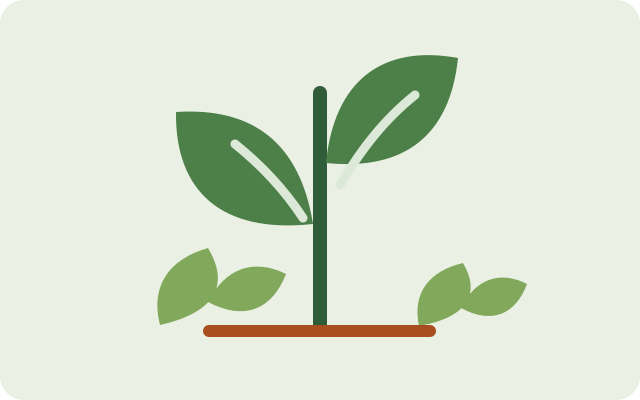
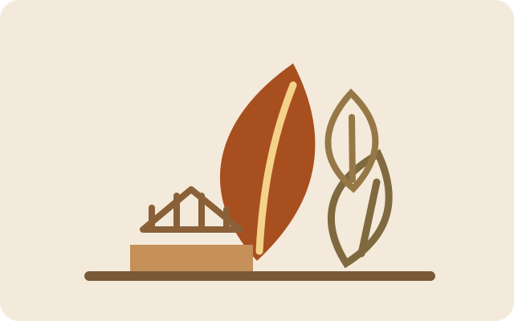

Apartment caddy
Collect scraps in a small, covered container and empty it regularly into a community compost drop-off. It is convenient, but does not finish compost on its own.
- Best for: kitchens and shared buildings
- Needs: a nearby collection point
Getting started
Compost systems can be as small as a kitchen caddy or as roomy as an outdoor pile. Start with a manageable setup, then add materials in layers.
The best setup is one you can maintain. Check local rules before starting a shared or community compost system.
Collect scraps in a small, covered container and empty it regularly into a community compost drop-off. It is convenient, but does not finish compost on its own.
A closed rotating bin keeps materials contained and makes mixing easy. Add dry browns with food scraps to balance moisture and reduce odors.
An open pile or slatted bin can handle more leaves and garden trimmings. It needs space and occasional turning to maintain airflow.
Your selection is stored only in this browser, so the home page can remind you of your preferred setup.
What to add
Greens are moist, nitrogen-rich ingredients. Browns are dry, carbon-rich ingredients that help create structure. A useful starting point is about two parts browns to one part greens by volume.


The pile should feel damp, like a wrung-out sponge. Add dry browns if it is soggy; sprinkle in water if the material is dusty and dry.
Turn or fluff compacted material from time to time. Chopping scraps into smaller pieces can also help them break down more evenly.
Leave these out of a typical backyard pile: meat, dairy, fats and oils, pet waste, and diseased plants. Follow your local compost program’s rules for accepted materials.